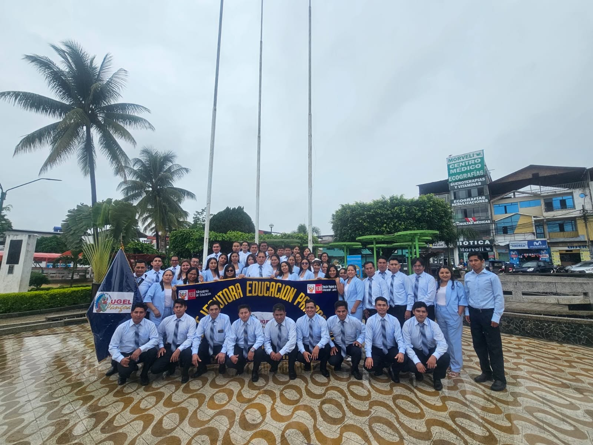
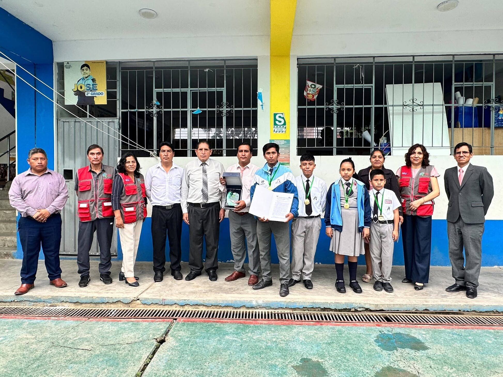

Regresión lineal simple
Relaciona una variable de entrada x con una respuesta numérica y mediante una recta.
ŷ = β₀ + β₁x
β₀ Interceptoβ₁ Pendienteŷ Valor estimado
EJEMPLO DIDÁCTICO
Horas de práctica → Ejercicios resueltos
Las grandes ideas empiezan con curiosidad. Descubre el aprendizaje supervisado y crea tu primer modelo de regresión lineal con Python.

Crea programas con algoritmos de aprendizaje supervisado. Aprende los conceptos, conecta los datos y llévalos a la práctica.
Describe los tipos de algoritmos y descubre cómo aprenden a partir de ejemplos.
Explorar los algoritmosDefine ambos modelos y comprende la relación entre variables y predicciones.
Conocer los modelosImplementa un algoritmo de regresión lineal simple y experimenta con sus resultados.
Entrar al laboratorioEn el aprendizaje supervisado, un modelo recibe datos con respuestas conocidas. Al entrenarse, encuentra patrones que luego usa para predecir resultados en datos nuevos.
Predice valores numéricos: una temperatura, un precio o la cantidad de ejercicios resueltos.
Predice una etiqueta o clase, como identificar si un mensaje es correo deseado o spam.
Regresión y clasificación son tipos de tareas. Algunos algoritmos, como los árboles, pueden resolver ambas.
La regresión lineal busca la combinación de coeficientes que minimiza la suma de los errores al cuadrado entre los valores observados y los estimados.
Relaciona una variable de entrada x con una respuesta numérica y mediante una recta.
Horas de práctica → Ejercicios resueltos
Relaciona varias entradas x₁, x₂, …, xₚ con una respuesta numérica, ajustando un coeficiente por entrada.
Horas + sesiones de práctica → Ejercicios resueltos
Una relación estadística no demuestra causalidad. La calidad de una predicción depende de los datos y debe evaluarse con ejemplos nuevos.
Entrena una recta con datos ficticios, cambia las horas de práctica y observa la predicción. Después, lleva el mismo algoritmo a Python.
La estimación puede ser decimal. Es un ejemplo matemático; no mide el desempeño real de estudiantes.
La simulación se calcula en tu navegador. El archivo .py implementa el mismo método en Python 3, sin instalar bibliotecas.
Edita los ejercicios resueltos y vuelve a entrenar. Los cambios se reflejan también en el código Python.
Valores permitidos: de 0 a 15 ejercicios.| Horas (x) | Ejercicios (y) |
|---|
Tu siguiente paso: descarga el archivo y ejecútalo con python regresion_simple.py. El ejemplo incluye una evaluación con datos de prueba separados.

CIENCIA Y EDUCACIÓN EN PANGOALa educación conecta nuestra comunidad con nuevas formas de comprender el mundo. Esta propuesta reúne tecnología y aprendizaje en un espacio para preguntar, experimentar y crear.
Conoce a la Unidad de Gestión Educativa Local Pangoa y accede a su información institucional en sus canales oficiales.
Conocer UGEL Pangoa